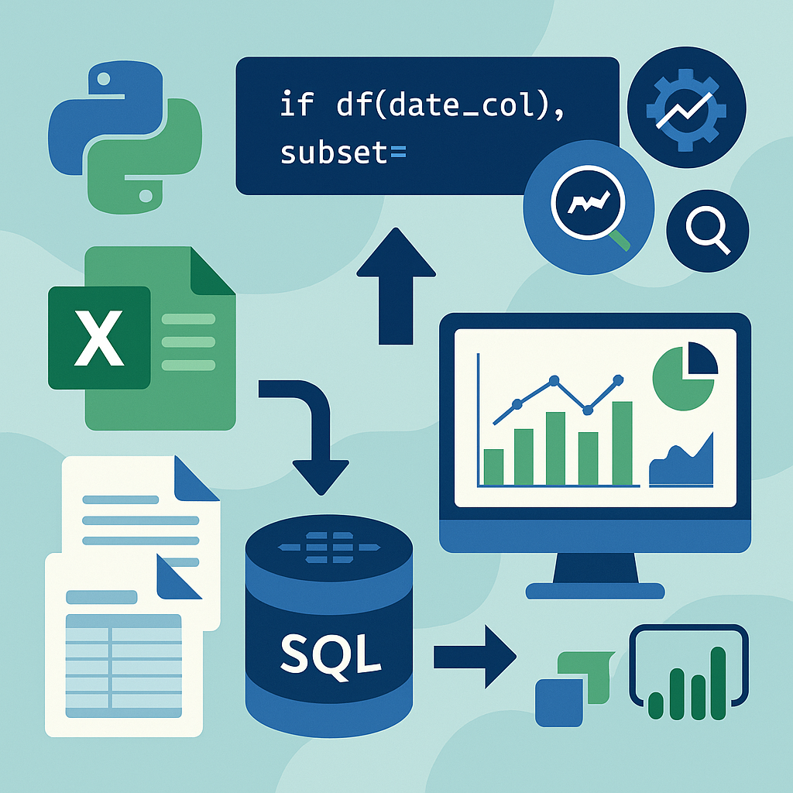
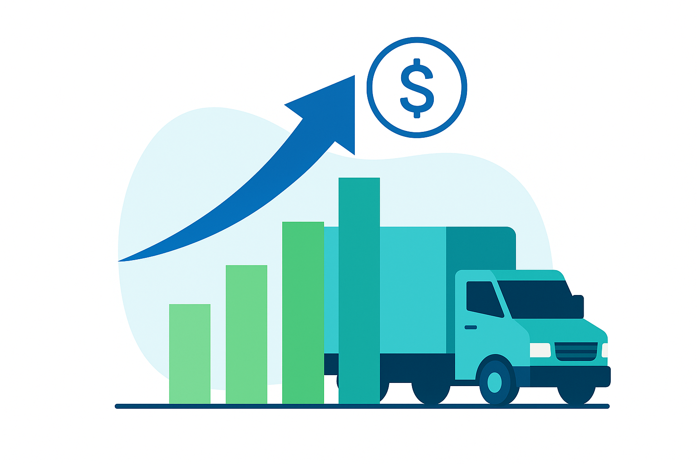

Fleet Logistics Optimization: Delivering $50K+/Year Savings with Data Science and Business Analytics
Tulsa, OK — Data consolidation, ML modeling, and Power BI for high-impact logistics transformation
Overview
In 2024, I partnered with a leading US logistics provider headquartered in Tulsa, Oklahoma, to overhaul and optimize their delivery operations across the South and Midwest. The company managed a 300-truck fleet servicing Oklahoma, Texas, Atlanta, and other major markets, but struggled with disconnected legacy data, opaque profitability, and costly inefficiencies in their dispatch network.
My role: lead the end-to-end transformation of their delivery analytics—from fragmented Excel chaos to ML-powered, insight-driven decision making.
Project Challenges
- Fragmented Historical Data: More than 100,000 delivery records were scattered across hundreds of spreadsheets, with inconsistent formats, missing fields, and duplications.
- Unclear Profitability: Deliveries to some cities and clients—especially longer out-of-state runs—were sometimes run at a loss, but the lack of consolidated data made it nearly impossible to optimize routes or account strategies.
- Manual, Slow Reporting: Leadership spent hours each week trying to piece together reports, slowing response time and making strategic pivots nearly impossible.
My Approach & Solution
-
Data Engineering & Standardization:

Built a custom ETL pipeline in Python and SQL to unify 100K+ rows into a single, audit-ready dataset. Developed scripts to identify and resolve duplicate trips, standardize client/city names, and patch missing financial fields. Documented data lineage, business rules, and quality checks for compliance and repeatability. -
Deep Exploratory Data Analysis (EDA):
Profiled delivery frequencies, profit margins, and order mix across all major cities (OK, TX, Atlanta, and more). Surfaced outliers—like underpriced long hauls, or customers with consistently negative profit—using advanced filtering and Excel PivotTables. Quantified the cost of non-optimal routing and customer mix, presenting findings in clear, actionable summaries to the COO. -
Machine Learning for Strategic Optimization:
 Engineered new features (e.g., city clusters, trip distance bands, delivery urgency, client segment) for ML modeling. Trained and validated Decision Tree and XGBoost models to predict delivery profitability by trip and by client. Used model outputs to simulate “what-if” scenarios:
Engineered new features (e.g., city clusters, trip distance bands, delivery urgency, client segment) for ML modeling. Trained and validated Decision Tree and XGBoost models to predict delivery profitability by trip and by client. Used model outputs to simulate “what-if” scenarios:
– Which customers/locations, if prioritized, would maximize profit with minimal impact on service speed?
– What routes should be restructured or eliminated to stop ongoing losses? -
Power BI Executive Dashboarding:
Developed drill-down dashboards tracking KPIs (on-time rate, margin, distance, top clients, negative profit trips) at daily, weekly, and monthly levels. Enabled leadership to identify issues at a glance, empowering data-driven interventions. -
Change Management & Stakeholder Buy-in:
Presented findings to executives and operations teams, balancing technical depth with business relevance. Led workshops on interpreting ML results, scenario planning, and best practices for data-driven fleet planning. Produced documentation and playbooks for future data updates and dashboard enhancements.
Key Results & Business Impact

- $50,000+ in Yearly Savings Unlocked: Data-driven recommendations enabled the company to drop low-margin routes, renegotiate pricing with loss-making clients, and prioritize high-value customers—directly improving net profit.
- Accelerated Decision-Making: Weekly strategy meetings moved from ad hoc Excel wrangling to focused, insight-based planning, reducing reporting time from hours to minutes.
- Repeatable Success at Scale: Methodology and tools were rolled out to a second logistics group subsidiary (500+ fleet), further amplifying the value of the engagement.
- Enduring Data Culture Shift: Teams now have a sustainable process for updating, visualizing, and leveraging delivery data for business growth.
What This Shows About Me:
This project highlights my ability to bridge the gap between raw data and real-world business outcomes—using data engineering, advanced analytics, and machine learning to deliver measurable value even in complex, high-stakes corporate environments.
This project highlights my ability to bridge the gap between raw data and real-world business outcomes—using data engineering, advanced analytics, and machine learning to deliver measurable value even in complex, high-stakes corporate environments.
Note on Confidentiality:
Due to client privacy and proprietary information, no visual examples or source code are shared publicly.
Due to client privacy and proprietary information, no visual examples or source code are shared publicly.